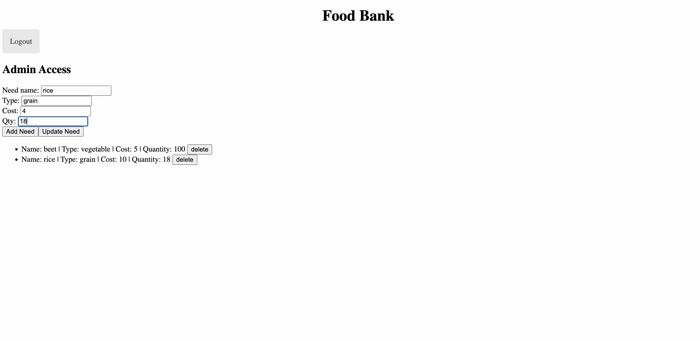

Admin Page
In this sprint, we started working on the user interface and continued creating functionality. We first made a basic login page that sends the user into the admin page or their own user page. Then, we made an admin page with add, delete, and update buttons to change the inventory.
User Page

Next, we created a user page where the food items are displayed. We then created buttons for the user to add or delete food items from their basket. We also created a search bar to enable the user to search for food items by name.